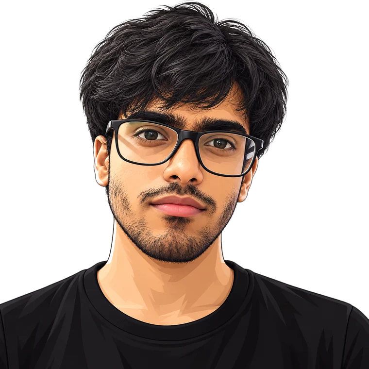

AI Engineer · New Delhi
I'm Hammadur Rahman. I build agents and RAG pipelines in Python, then put deterministic checks under the model's output so a wrong answer gets caught before a user sees it.
↖ move your cursor: it's a query vector. The nearest embeddings light up.

About me
I'm an Applied AI Engineer at Blackcoffer, where I've spent the last year putting LLM systems into real workflows: multi-stage pipelines, agents, RAG, and the APIs that serve them.
What I care about most is the gap between a demo and a system you can trust. A model checking its own work misses things, so I layer plain, deterministic Python validators under the output and build evaluation harnesses that score results before anything acts on them.
Multi-agent workflows in LangGraph, tool calling, and retrieval tuned against a real evaluation set.
Harnesses, guardrails and hallucination tests, so quality is measured instead of assumed.
Async FastAPI services, Docker, and GitHub Actions CI/CD, with structured logs you can debug from.
Tools I use
What I work with day to day, not everything I've ever touched.
Selected work
Two systems I own end to end. The code is public, so go check it.
A team of agents watches a service, spots cascading failure signals and drafts a fix. An evaluation harness scores the agents' output before anything is acted on.
Upload a PDF, a web page or a YouTube video and ask questions about it using OpenAI, Gemini or Cohere. Each conversation keeps its own memory.
Live RAG demo
Ask anything about my work. It answers only from my real experience and projects, and the trace shows exactly how each answer was retrieved.
Hi, I'm Hammadur's portfolio assistant. I answer only from his real experience and projects, so if something isn't in my knowledge base, I'll tell you instead of guessing.
Pick a question below or type your own.
Background
Work experience
Blackcoffer · Remote / New Delhi
Education
Delhi Technical Campus (GGSIPU) · CGPA 7.7
Available now · 15-day notice
I'm open to AI Engineer roles anywhere in India, remote or on-site.
Email me →Say hello